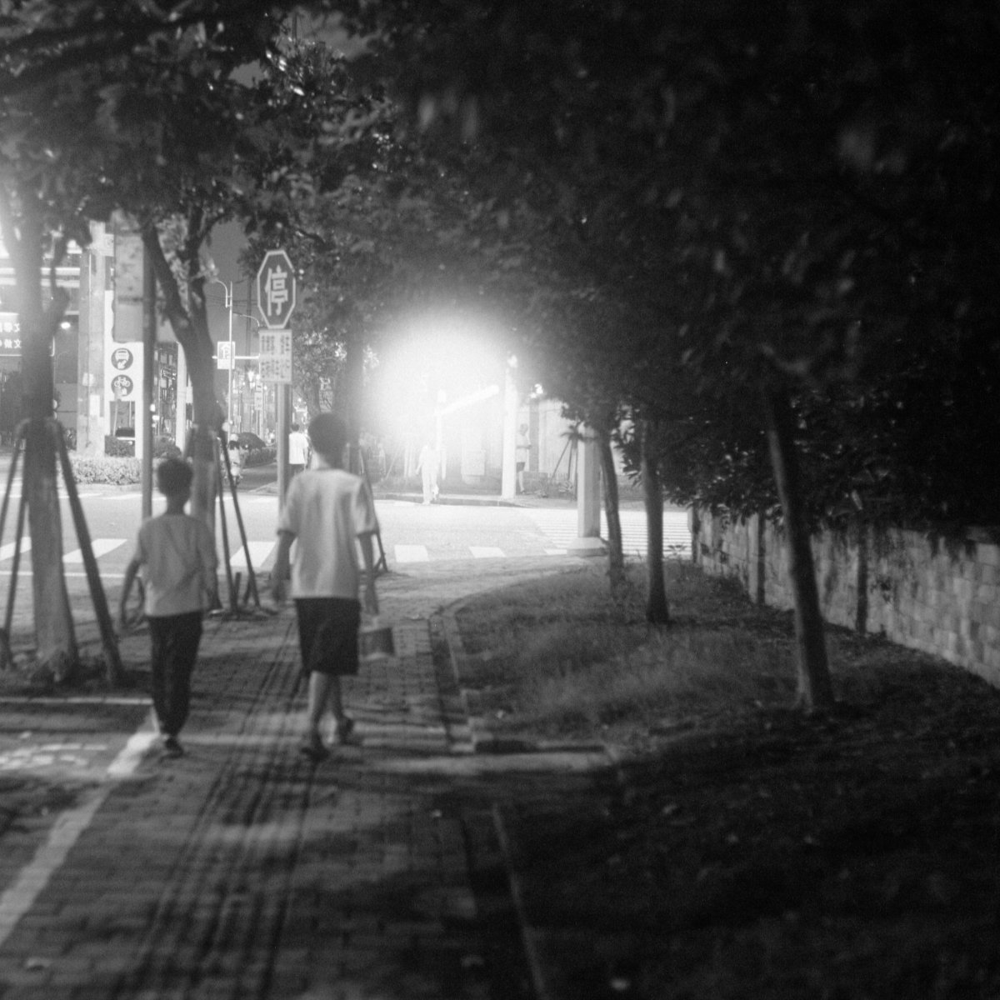
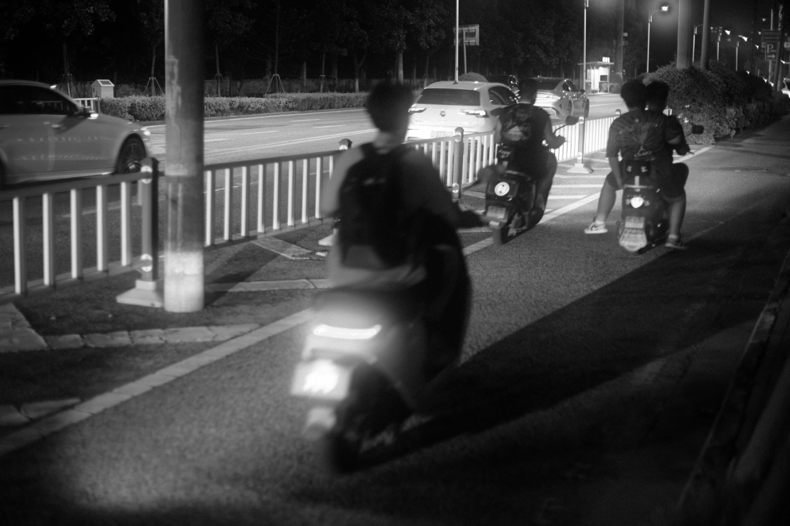
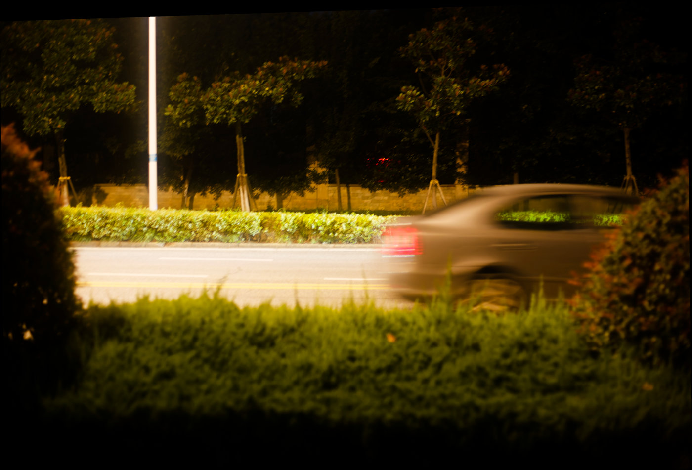

本周我把相机 CANON EOS 5D 和 Planar 50/1.4 镜头带在了身边，这只 Planar 镜头用转接环被安装在 5D 机身上，这样就变成了一个整体。今天晚上出去散步时，我特意把相机拿在手里。没带包，就用背带搭在肩上出了门。
说实话，这台相机和镜头已经好多年没见天日了，说不清原因，反正我冷落它们好多年，最近在整理旧照片时，突然想到我的这套摄影系统不知道还能用吗？然后急忙把它们从不怎么干燥的干燥箱里拿出来，外观看上去好象没坏，但深入摸上去就发现真的变了，侧边的一块盖板皮出油了，有点粘手，还有顶部左边的模式转盘也粘乎乎的，转盘上的黑漆全粘在手上，黑油油的。不过，我用餐巾纸磨擦了一下，基本上把那层油头擦掉了，还好，除了侧边的盖板皮块掉了一块，其它部分还算正常。
然后出门散步时开始拍照。拍的过程中发现只要面对光源直射镜头，照片中的光源处就被晕染成一团雾蒙蒙的。我意识到这只镜头不适合拍夜景，至少不能直对光源，于是后面我尽量在画面中避开光源，这样拍了几张感觉还能用。
跟 AI 小C 聊了一会儿，它似乎天生善解人意，居然对我说，有些老镜头就是如此的，现代镜头讲究锐利，老镜头对解析力不讲求极致，因为在胶片时代对解析力的要求远不如现在这么高，而且还要照顾黑白摄影。据 AI 的说法，这种晕染如果程度能控制好，其实在黑白摄影中反而能增加氛围和情绪感。我的天呢，这么严重的晕染居然还能说成是好事，把我安慰得服服贴贴。
原片是佳能 cr2 格式的 RAW 文件，导入到 DXO Photolab 中进行浏览和简单处理，并按我喜好套了自动胶片预设。


